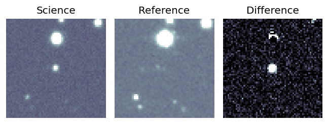
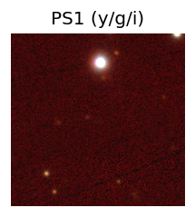
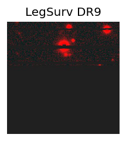
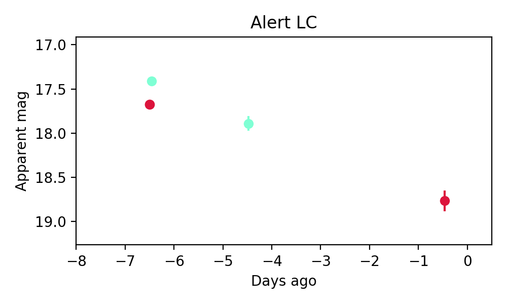

Candidate List 20210524Previous Day Next Day
Section 1: New Sources (age<1d) Section 2: Old (1-5d) sources observed last nightplaceholder
Section 2: Older Sources Observed Last Night (1)
0. ZTF21abbxiyd (Afterglow?FBOT?) (TNS: A) [Back to Top] [Share] [Trigger Swift] [Fritz] [Lasair]RA, Dec: 307.08787, -9.07322 20h28m21.09s, -9d-4m-23.60sGalactic (l, b): 35.75686, -25.63052 ext(g-r) = 0.08
PS1: 1 source in 3 arcsec Closest: d = 0.25 arcsec photoz=0.61+/-0.05 peak abs mag = -25.69
LegacySurvey: 0 sources in 3 arcsec

Extinction-corrected gr color:
From alerts: -0.34 +/- 0.05 mag
Rise Rate:
g: 0.45 mag/day
r: 0.28 mag/day
i: -99 mag/day
Fade Rate:
g: 0.24 mag/day
r: 0.18 mag/day
i: -99 mag/day